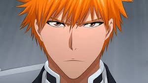
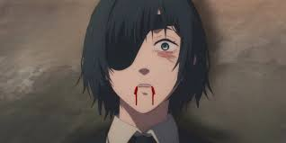
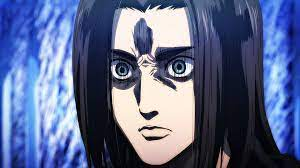
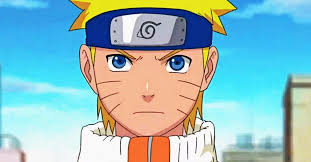

click the picture below

ichigo

himeno

eren

naruto
Gallery
about
Contact
Home
ichigo
Ichigo lost his mother when he was young and blamed himself for it.
This tragedy is a deep part of his character, in how he's so protective of his friends
and family,and especially respectful
to theghosts he sees in his daily life.
himeno
Himeno's entire body vanishes, leaving only her clothes behind.
In her final moments she uses the Ghost Devil's arm to pull Denji's chainsaw cord,
regenerating him and allowing him to fight in her place.
Later in the hospital, Aki mourns Himeno's death.
Ghost Devil Contract: Himeno had the ability to use the power of the Ghost Devil;
in exchange for sacrificing her right eye permanently to the devil,
Himeno could summon and control the right arm of the Ghost Devil
by making the desired motions with her own right arm,
which the ghost will mimic.
eren
Eren loses touch with a few aspects of reality.
His continuously has hallucinations of being eaten by a titan,
delusions of him being the sole reason that all Titans will be killed,
and when agitated,begins to have movement disorders such
as large amounts of twitching and shaking.
His close friends betrayed him . He learned that he ate his father .
With the Attack Titans power he saw all the people he's gonna kill and that he
actually killed his own mom,the Reiss family ,
and everyone killed in AOT
Naruto
His parents died on the night he was born during the Nine-Tails' rampage,
making him an orphan from the beginning of his life.
Naruto's father managed to seal the fox within him before he died,
and this made Naruto's life even harder.
As a child, Naruto was neglected and was only acknowledged as a monster and,
demon boy who shouldn't be alive, let alone a Shinobi.
He grew up without any parents, without the love of another person.
In fact, Naruto has been entirely alone his entire life.,